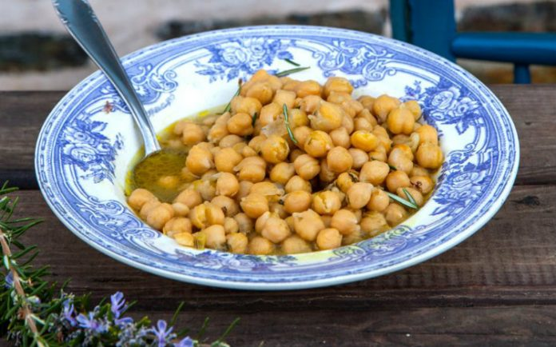

Chickpeas

Description
Cook dried chickpeas with onion, turmeric and olive oil to render them bright, savory, and
full of flavor. They’re so good you’ll want to eat them straight from the pot.
Ingredients
- 80 ml chickpeas
- 1 ml turmeric
- 1 onion
- 1 knorr chicken cube
- 3 ml salt
- Olive oil
Steps
- Let the chickpeas soak in water for a whole night.
- Add the chickpeas, turmeric, onion, knorr cube and salt in a pot.
- Fill the pot with enough water for the Ingredients to be submerged in it.
- As soon as it starts boiling, close the lid, and boil for 30 minutes.
- Add olive oil and serve.